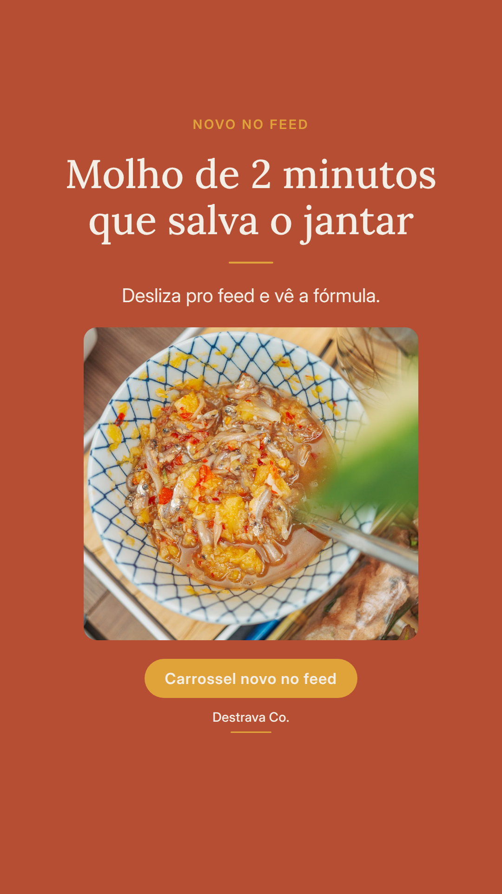
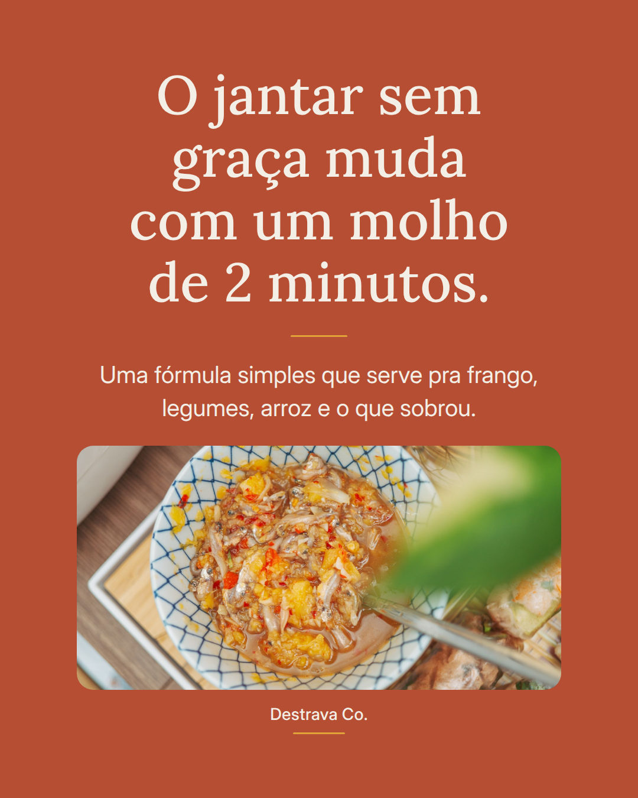
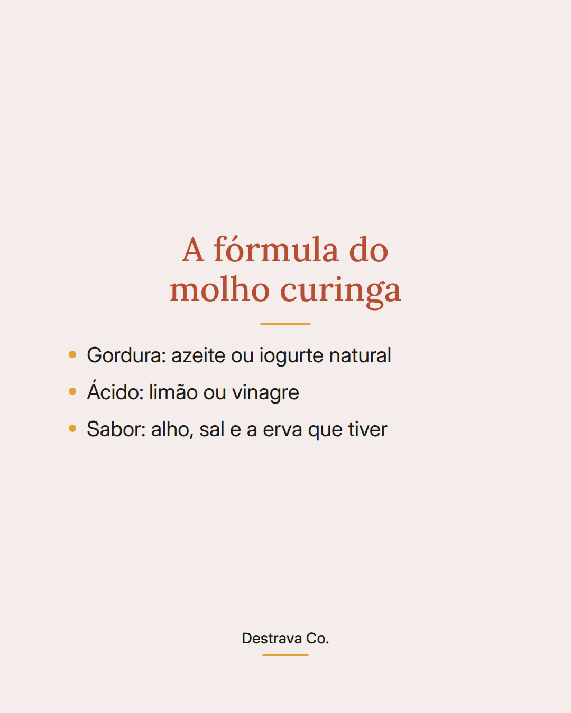
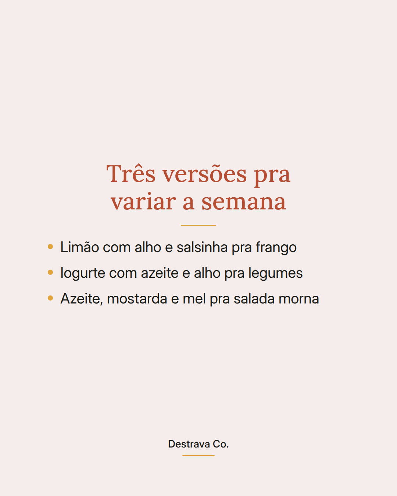
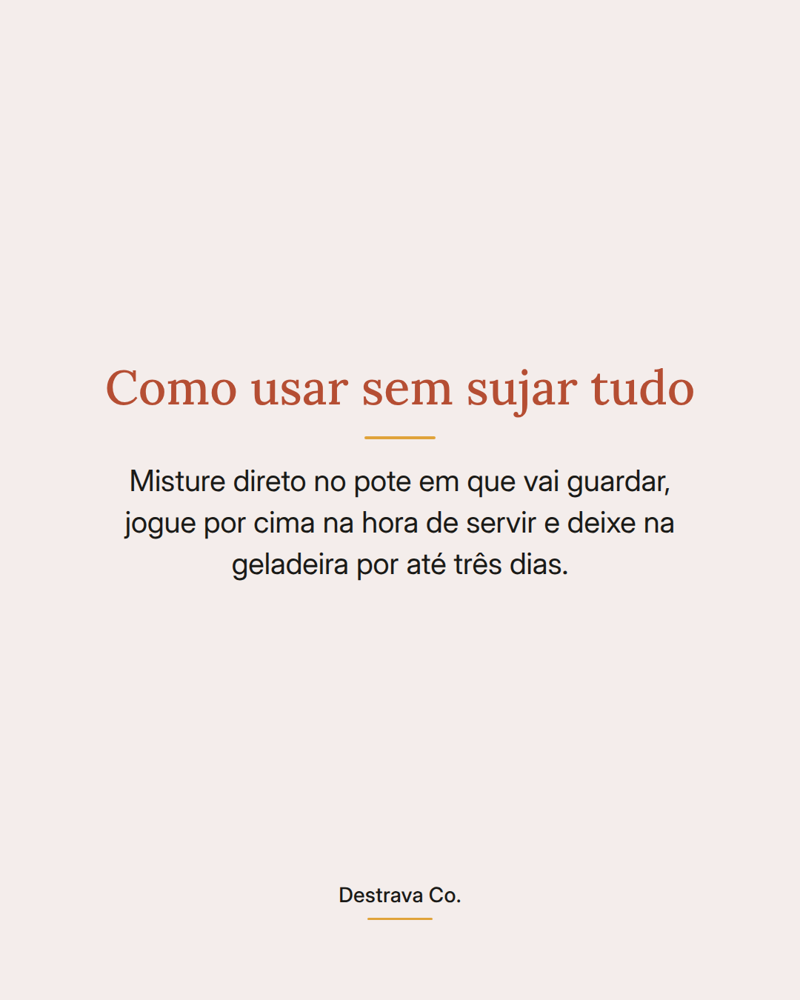

Molho curinga de 2 minutos: o truque que muda o jantar sem receita nova.
A fórmula é sempre a mesma: uma gordura, um ácido e um tempero. Azeite com limão e alho. Iogurte com azeite e sal. Azeite com mostarda e um fio de mel.
O mesmo frango de sempre, os legumes de ontem, o arroz da panela. Tudo ganha cara nova quando chega um molho por cima na hora de servir.
Faz direto no potinho que vai pra geladeira. Dura uns três dias e resolve mais de um jantar.
Salva pra lembrar na próxima correria e manda pra quem sempre diz que não sabe o que fazer no jantar. Se quiser ideias prontas, o PDF com 20 receitas rápidas até 15 minutos está esperando você.